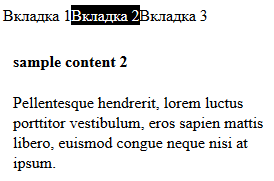

TODO:
1. Создать простой HTML-документ с произвольным содержимым, как минимум, содержащий блочные элементы (они
понадобятся для демонстрации стилей).
2. Показать в созданном документе три способа использования каскадных таблиц стилей:
inline-описание (используется атрибут style);
с помощью контейнера style в секции заголовка;
подключить стилевую таблицу, расположенную во внешнем файле;
3. Используя селекторы CLASS и ID, показать использование стилей (например, для форматирование шрифта, текста,
изменения фона документа и т.д.)
4. Показать использование абсолютного и относительного позиционирования.
5. Показать использование плавающей модели (свойство float).
6. Добавить в документ элементы согласно варианту.
7. Проверить отображение созданного документа в разных браузерах (при их наличии).
8. Внести в проект указанные преподавателем изменения.
7. Добавить на страницу элемент, сдержащий переключаемые вкладки. Пример на рисунке.

inline описание стилей и абсолютное позиционирование – check